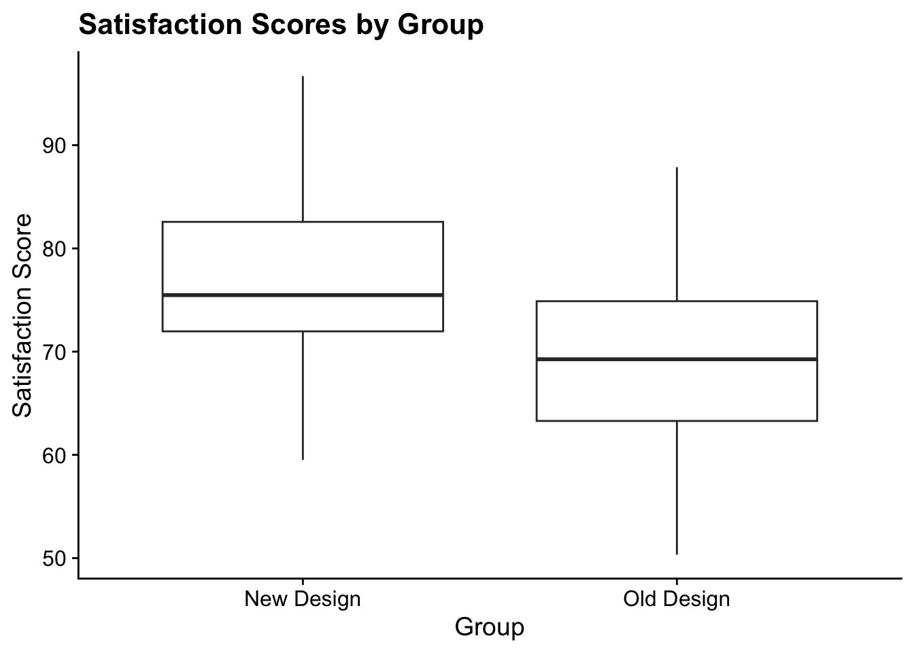
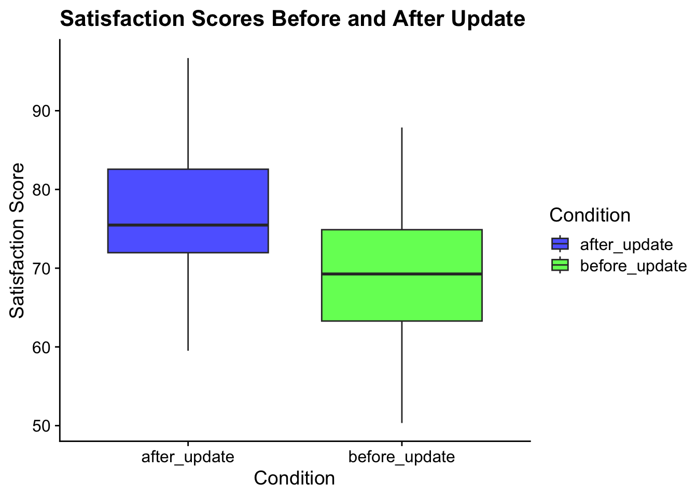

# Load the necessary packages library(tidyverse) # used for data manipulation and visualization
── Attaching core tidyverse packages ──────────────────────── tidyverse 2.0.0 ──
✔ dplyr 1.1.4 ✔ readr 2.1.5
✔ forcats 1.0.0 ✔ stringr 1.5.1
✔ ggplot2 3.5.1 ✔ tibble 3.2.1
✔ lubridate 1.9.3 ✔ tidyr 1.3.1
✔ purrr 1.0.2
── Conflicts ────────────────────────────────────────── tidyverse_conflicts() ──
✖ dplyr::filter() masks stats::filter()
✖ dplyr::lag() masks stats::lag()
ℹ Use the conflicted package (<http://conflicted.r-lib.org/>) to force all conflicts to become errors
library(cowplot) # adds new plotting themes for data visualization
Attaching package: 'cowplot'
The following object is masked from 'package:lubridate':
stamp
library(effsize) # or effect size calculations# to install any missing packages go to the Terminal and run the command: install.packages("PACKAGE_NAME")
3.2 Brief Explanation
The t-test, proposed by William Sealy Gosset under the pseudonym “Student” in 1908, is used to determine if there is a significant difference between the means of two groups. The t-test is applicable in various scenarios, including both small and large sample sizes, particularly when the population variance is unknown. The t-test assumes that the data is approximately normally distributed.
There are two main types of t-tests commonly used:
Independent Samples t-test: Compares the means of two independent groups (between-subjects design).
Paired Samples t-test: Compares means from the same group at different times or under different conditions (within-subjects design).
3.2.1 Understanding Independent and Dependent Data
Independent Data: In an independent samples t-test, the data from the two groups are independent, meaning that there is no inherent relationship between the observations in one group and the observations in the other group. This is typical of a between-subjects design, where different participants are assigned to different conditions.
Dependent Data: In a paired samples t-test, the data are dependent, meaning that each observation in one condition is paired with an observation in another condition. This is typical of a within-subjects design, where the same participants are measured under different conditions or at different times.
3.3 Research Scenario
Imagine a tech company, “InnovateTech,” which has recently launched a new interface design for its flagship software. The company is keen to understand whether this new design truly enhances user satisfaction compared to the old design. The company has two different research questions:
Independent Samples Scenario: InnovateTech randomly assigns users to use either the old or the new design and then measures their satisfaction. The research question is: Does the new interface design improve user satisfaction compared to the old design?
Paired Samples Scenario: InnovateTech asks the same users to use both the old and new designs at different times and then measures their satisfaction. The research question is: Does user satisfaction improve after using the new interface design compared to the old design?
3.4 Independent Samples t-test
3.4.1 Research Question
Research Question: Does the new interface design improve user satisfaction compared to the old design?
Hypothesis: - Null Hypothesis (H₀): There is no significant difference in user satisfaction scores between the old and new interface designs. - Alternative Hypothesis (H₁): Users report higher satisfaction scores with the new interface design compared to the old design.
Min. 1st Qu. Median Mean 3rd Qu. Max.
50.33 65.48 73.26 73.16 80.62 96.69
p <-ggplot(studydata, aes(x = group, y = satisfaction)) +geom_boxplot() +theme_cowplot() +labs(title ="Satisfaction Scores by Group", x ="Group", y ="Satisfaction Score")p

3.4.4 Performing the t-test
3.4.4.1 Important Note About R’s t-test
By default, R uses Welch’s t-test, which does not assume equal variances between the groups. This is often a more robust approach, but if you want to match the classical t-test calculation (assuming equal variances), you need to specify var.equal = TRUE in the t.test() function. The code provided here uses the classical approach to ensure it matches the Stata output.
3.4.4.2 Stata
use satisfaction_data_independent.dtattest satisfaction, by(group)
3.4.4.3 R
t.test(satisfaction ~ group, data = studydata, var.equal =TRUE)
Two Sample t-test
data: satisfaction by group
t = 3.0841, df = 58, p-value = 0.003125
alternative hypothesis: true difference in means between group New Design and group Old Design is not equal to 0
95 percent confidence interval:
2.545972 11.962870
sample estimates:
mean in group New Design mean in group Old Design
76.78338 69.52896
3.4.5 Interpretation
P-value: Indicates whether the difference in means is statistically significant.
Confidence Interval: By default, this is a 95% confidence interval, but you can adjust this with the conf.level parameter in the t.test() function.
3.5 Paired Samples t-test
3.5.1 Research Question
Research Question: Does user satisfaction improve after using the new interface design compared to the old design?
Hypothesis: - Null Hypothesis (H₀): There is no significant difference in user satisfaction scores before and after using the new interface design. - Alternative Hypothesis (H₁): Users report higher satisfaction scores after using the new interface design compared to before.
before_update after_update
Min. :50.33 Min. :59.51
1st Qu.:63.29 1st Qu.:71.97
Median :69.26 Median :75.48
Mean :69.53 Mean :76.78
3rd Qu.:74.89 3rd Qu.:82.57
Max. :87.87 Max. :96.69
# Reshape the data to long formatstudydata_long <- studydata %>%pivot_longer(cols =c("before_update", "after_update"), names_to ="Condition", values_to ="Satisfaction")# Create the boxplotp <-ggplot(studydata_long, aes(x = Condition, y = Satisfaction, fill = Condition)) +geom_boxplot(alpha =0.7) +theme_cowplot() +labs(title ="Satisfaction Scores Before and After Update", x ="Condition", y ="Satisfaction Score") +scale_fill_manual(values =c("blue", "green"))p

3.5.4 Performing the t-test
3.5.4.1 Stata
use satisfaction_data_paired.dtattest before_update == after_update
Paired t-test
data: studydata$before_update and studydata$after_update
t = -2.8692, df = 29, p-value = 0.007601
alternative hypothesis: true mean difference is not equal to 0
95 percent confidence interval:
-12.425597 -2.083245
sample estimates:
mean difference
-7.254421
3.5.5 Interpretation
P-value: Indicates whether the difference in means is statistically significant.
Confidence Interval: It can be adjusted from the default 95% to another level if needed (but simply use 95% in case you are in doubt).
3.6 Explanation of Relevant Terms
Term
Definition
Common Misconception
P-value
The probability of obtaining test results at least as extreme as the results actually observed, under the assumption that the null hypothesis is true.
The p-value is the probability that the null hypothesis is true.
Confidence Interval
A range of values, derived from the sample data, that is believed to contain the true parameter value with a certain probability. The most common level of confidence is 95%, but this can be adjusted (e.g., to 90% or 99%) depending on the analysis.
A 95% confidence interval means there is a 95% probability that the true parameter lies within the interval.
T-statistic
A ratio of the departure of the estimated value of a parameter from its hypothesized value to its standard error. The degrees of freedom (df) are the number of independent values that can vary in an analysis without breaking any constraints.
The t-statistic directly tells us the probability of the null hypothesis being true.
3.7 Interpretation Questions
What does a significant p-value indicate in the context of this t-test?
Solution 1: A significant p-value indicates that the observed data is unlikely under the null hypothesis. This suggests that there is evidence against the null hypothesis, implying a statistically significant difference between the satisfaction scores of the two groups (for independent samples) or before and after the update (for paired samples). However, it does not measure the probability that the null hypothesis is true or false.
How would you interpret the confidence interval in this analysis?
Solution 2: The confidence interval provides a range of values that, based on the sample data, is likely to contain the true mean difference. If we were to repeat the experiment many times, we would expect a specified proportion (e.g., 95%) of these intervals to contain the true mean difference. It does not mean that there is a 95% probability that the true mean difference lies within this specific interval. The most common confidence level is 95%, but it can be adjusted depending on the requirements of the analysis.
3.8 Effect Sizes for t-tests
Effect sizes are a crucial part of reporting t-test results because they provide information on the magnitude of the difference between groups or conditions, beyond just the statistical significance. Below, we discuss the common effect sizes to report for Independent Samples t-tests and Paired Samples t-tests.
The interpretation guidelines for effect sizes such as Cohen’s d and the correlation coefficient (r) are based on widely accepted conventions in the field of psychology and social sciences. These conventions were originally proposed by Jacob Cohen in his foundational work on statistical power analysis.
A common cautionary quote from Jacob Cohen regarding his proposed guidelines on effect sizes can be found in his book Statistical Power Analysis for the Behavioral Sciences(Cohen 1988)1. Cohen emphasized that the guidelines he provided for interpreting effect sizes (i.e., small, medium, and large) were meant to be rough, arbitrary conventions rather than rigid rules. Here’s a frequently cited quote:
“The terms ‘small,’ ‘medium,’ and ‘large’ are relative, not only to each other but to the area of behavioral science or even more particularly to the specific content and research method being employed. A medium effect in one area may be considered small in another, or even large in a third. The conventions were chosen as recommended operational definitions, because they are reasonable and because they are frequently used as conventional values in the social sciences, but they are not to be applied mechanically or universally” (Cohen, 1988, p. 25).
This quote underscores that the interpretation of effect sizes should be context-dependent and that researchers should avoid applying these guidelines too rigidly. Instead, Cohen urged that the significance of an effect size should be interpreted in the context of the specific research question, field of study, and methodology used.
3.8.0.1 Independent t-test
For an Independent Samples t-test, the most common effect size to report is Cohen’s d.
3.8.1 Cohen’s d Calculation:
Cohen’s (d) is calculated as the difference between two means divided by the pooled standard deviation of the groups. The formula is:
[ d = ]
Where:
\[\bar{X}_1\] = the mean of the first group
\[\bar{X}_2\] = the mean of the second group
\[s_1\] = the standard deviation of the first group
\[s_2\] = the standard deviation of the second group
\[n_1\] = the sample size of the first group
\[n_2\] = the sample size of the second group
Calculating Cohen’s d for Independent Samples t-test:
R:
To calculate Cohen’s d for an Independent Samples t-test in R, you can use the effsize package, which provides a reliable implementation.
# We need to use the dataset with the independent groups# Regenerating the dataset to make sure we have the right oneset.seed(123)n <-30old_design <-rnorm(n, mean =70, sd =10)new_design <-rnorm(n, mean =75, sd =10)studydata_independent <-data.frame(group =rep(c("Old Design", "New Design"), each = n),satisfaction =c(old_design, new_design))
# Note: Use the dataset with independent samples: studydata_long# Compute cohen's dcohen_d <-cohen.d(satisfaction ~ group, data = studydata_independent, pooled =TRUE)print(cohen_d)
Cohen's d
d estimate: 0.7963098 (medium)
95 percent confidence interval:
lower upper
0.2593757 1.3332438
Stata:
Stata doesn’t have a built-in command to directly calculate Cohen’s d, but it can be calculated using the following steps:
* Make sure the appropriate dataset is loaded (e.g. use DATASET_NAME)* Assuming the data is already loaded in Statattest satisfaction, by(group)* Calculate manuallygen pooled_sd = sqrt(((r(sd_1)^2) * (r(N_1) - 1) + (r(sd_2)^2) * (r(N_2) - 1)) / (r(N_1) + r(N_2) - 2))gen cohen_d = (r(mu_1) - r(mu_2)) / pooled_sddisplay cohen_d
Effect Size
Required Information
How to Find It in Articles
Cohen’s d
Means of both groups, standard deviations, sample sizes
Look for mean differences, standard deviations, and sample sizes in the results section of articles. Typically, these are presented in tables or described in the text.
3.8.1.1 Paired t-test
For a Paired Samples t-test, the common effect sizes to report include Cohen’s d for paired samples and Correlation coefficient (r).
In paired samples, Cohen’s d is calculated using the formula:
\[
d = \frac{\bar{X}_D}{s_D}
\]
Where:
\[\bar{X}\_D\] = mean difference \[s_D\] = standard deviation of the difference
3.8.2 Correlation Coefficient (r) Calculation:
The correlation coefficient (r) for paired samples can be calculated from the t-statistic (t) and degrees of freedom (df) using the formula:
\[ r = \frac{t}{\sqrt{t^2 + df}} \]
Where (t) is the t-statistic and (df) is the degrees of freedom.
Calculating Effect Sizes for Paired Samples t-test:
R:
# We need to use the dataset with the dependent data# Regenerating the dataset to make sure we have the right oneset.seed(123)n <-30before_update <-rnorm(n, mean =70, sd =10)after_update <-rnorm(n, mean =75, sd =10)studydata_paired <-data.frame(user_id =1:n,before_update = before_update,after_update = after_update)
# Calculate the mean difference and standard deviation of the differencesmean_diff <-mean(studydata_paired$before_update - studydata_paired$after_update)sd_diff <-sd(studydata_paired$before_update - studydata_paired$after_update)# Calculate Cohen's dcohen_d_paired <- mean_diff / sd_diffcat("Cohen's d = ",cohen_d_paired)
Cohen's d = -0.5238355
To calculate the correlation coefficient (r):
# Perform the paired t-testt_test <-t.test(studydata_paired$before_update, studydata_paired$after_update, paired =TRUE)# Extract values from object of test outputt_statistic <- t_test$statistic %>% unnamedegfreedom <- t_test$parameter %>% unname# Calculate the correlation coefficientr_value <- t_statistic /sqrt(t_statistic^2+ degfreedom)cat("r = ",r_value)
r = -0.4702152
Stata:
* Make sure the appropriate dataset is loaded (e.g. use DATASET_NAME)* Perform the paired t-testttest before_update == after_update* Calculate Cohen sd manuallygen mean_diff = r(mu_1) - r(mu_2)gen sd_diff = sqrt(r(sd_1)^2 + r(sd_2)^2 - 2 * r(sd_1) * r(sd_2) * r(rho))gen cohen_d_paired = mean_diff / sd_diffdisplay cohen_d_paired
These are common guidelines used to interpret the magnitude of effect sizes:
Effect Size Measure
Small
Medium
Large
Cohen’s d (Independent or Paired)
0.2
0.5
0.8
Correlation coefficient (r)
0.1
0.3
0.5
3.8.4 Differences Between Paired and Independent Effect Size Calculations
Independent Samples t-test: Cohen’s d is calculated using the pooled standard deviation of the two independent groups. The formula assumes that the two groups are independent and do not share any subjects.
Paired Samples t-test: Cohen’s d for paired samples is calculated using the standard deviation of the differences between paired observations. This accounts for the fact that the same subjects are measured twice, and thus the observations are not independent.
The correlation coefficient (r) in paired samples t-tests can also provide insight into the strength of the relationship between the two sets of observations, which is not applicable in independent samples designs.
3.9 R vs. Stata Commands
3.9.1 Statistical Analysis Commands
Step
R Command
Stata Command
Descriptive Statistics
summary(studydata$satisfaction)
summarize satisfaction
Box Plot
ggplot(studydata, aes(x = group, y = satisfaction)) + geom_boxplot()
graph box satisfaction, over(group)
T-Test (Independent)
t.test(satisfaction ~ group, data = studydata, var.equal = TRUE)